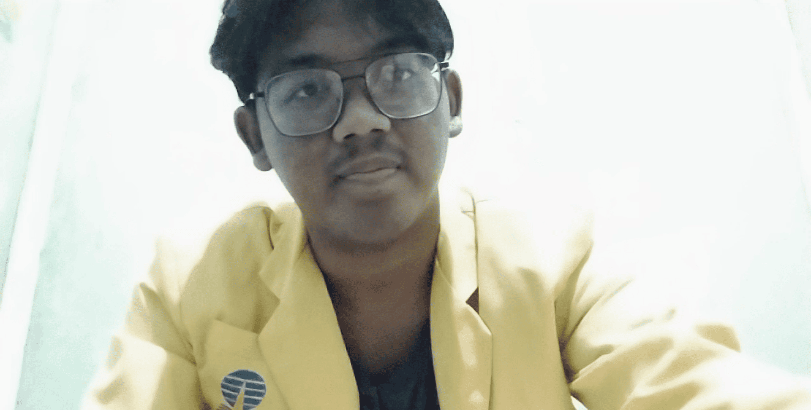
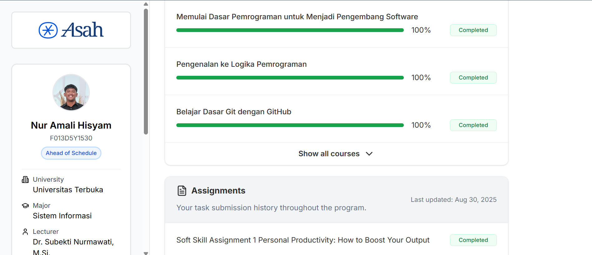
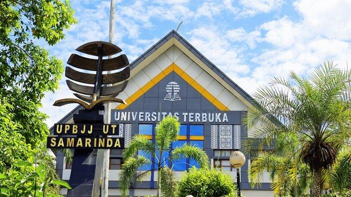

Biography

Assalamu'alaikum warahmatullahi wabarakatuh. Perkenalkan nama saya Nur Amali Hisyam,
saya berasal dari Samarinda. Saya ingin sekali menjadi seorang FrontEnd
Developer.
Saya harap saya bisa mencapai impian saya. Kebetulan ini adalah projek blog pribadi saya. Doakan
saya
ya teman-teman.
Activity

Saat ini saya sedang mengikuti kegiatan program Asah Led by Dicoding X Accenture.
Di program ini saya belajar salah satu coursenya yakni, Belajar Dasar Pemrograman Web.
Saya sangat senang mengikuti program ini, karena saya jadi tahu banyak hal tentang web.
Saya harap saya bisa menyelesaikan program ini dengan baik dan mendapatkan sertifikatnya.
Education
Berikut ini adalah beberapa institusi pendidikan yang pernah saya tempuh :
SMA Negeri 8 Samarinda

Saya sekolah di SMAN 8 Samarinda pada tahun 2019-2022 jurusan MIPA dan saya lulus pada tahun
2022.
Universitas Terbuka

Saya berkuliah di Universitas Terbuka program studi Sistem Informasi cabang UPBJJ-UT Samarinda
pada tahun 2023-sekarang.